Keep the pocket open
The pause must occur before the first extrusion that covers the ring pocket.

| Pocket floor / roof | Z12.4125 / Z16.0125 mm |
| Expected last open layer | Z16 mm |
| Expected first covering layer | Layer 81 · Z16.2 mm |
- Inspect the seat, last open pocket, pause command and first covering roads in the new native slice.
- Confirm one insertion pause occurs before any covering extrusion. The guide bore must remain open.
- Confirm the seated ring lies below both pocket rims and the covering roads land on the inner collar and outer band.
Expected, not a reviewed archive
The layer-81 / Z16.2 position follows the current CAD and 0.2 mm layer grid. A fresh native slice must verify the emitted moves; a CAD section alone does not authorize a print.